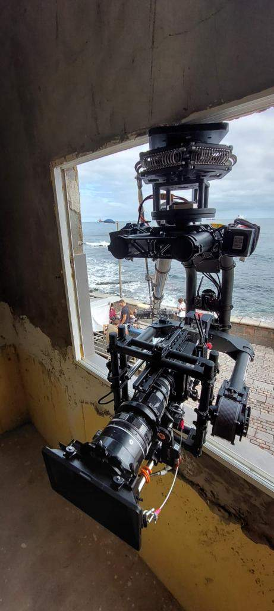

En los créditos aparece como grip; en los rodajes en España, casi siempre como maquinista. Es una de las figuras menos visibles del equipo técnico y, a la vez, de las que más influyen en el resultado: si la cámara se mueve, sube o va montada en un coche, hay un maquinista detrás. Explicamos qué hace, cómo se organiza el departamento y cuándo conviene contar con él.
Qué es un maquinista de cine
El maquinista es el técnico responsable de los soportes y movimientos de cámara. Monta, opera y asegura todo lo que sostiene la cámara cuando no va simplemente en un trípode: dollies y vías, grúas, camera car, carmounts, soportes de altura y rigs especiales.
Trabaja codo con codo con el director de fotografía y el operador de cámara. Ellos deciden qué plano quieren; el maquinista decide cómo se construye para que sea seguro, repetible y llegue a tiempo.
Funciones del maquinista en un rodaje
1. En preproducción
Revisa el guion técnico y las localizaciones, propone el material adecuado para cada plano y detecta problemas antes de que lleguen a set: un suelo donde el dolly necesita vías, una pendiente, un acceso estrecho o un coche que no admite un determinado montaje.
2. En montaje
Nivela vías, arma grúas, instala carmounts y fija la cámara en posiciones complicadas: una ventana, una barandilla, el capó de un coche. Cada montaje se revisa antes de la primera toma.
3. Durante la toma
Empuja el dolly marcando arranque, velocidad y parada, opera la grúa o acompaña la cámara estabilizada. Un buen dolly grip repite el mismo movimiento toma tras toma con precisión milimétrica, algo que explicamos en la guía de tipos de dolly.
4. Seguridad
Cualquier equipo que eleva o desplaza cámara y personas implica riesgos. El maquinista controla cargas, anclajes, contrapesos y viento, y tiene la última palabra sobre si un montaje es seguro.

Cómo se organiza el departamento de maquinistas
| Puesto | Qué hace |
|---|---|
| Jefe de maquinistas (key grip) | Planifica el material, lidera el equipo y responde de la seguridad. |
| Maquinista de dolly (dolly grip) | Opera el dolly y los movimientos sobre vías. |
| Operador de grúa | Maneja brazos y grúas, en set o sobre camera car. |
| Auxiliar de maquinistas | Carga, montaje, vías, contrapesos y apoyo en set. |
En un spot pequeño puede bastar un maquinista con un auxiliar; en un largometraje o una campaña de automoción, el departamento crece según los equipos que se usen.
Maquinista y eléctrico: no son lo mismo
Es una confusión habitual, sobre todo en producciones internacionales. El eléctrico (gaffer y su equipo) se ocupa de la iluminación y la energía. El maquinista se ocupa del soporte y el movimiento de cámara. En la tradición anglosajona los grips también manejan banderas y difusores para controlar la luz; en España ese reparto varía según el rodaje, por lo que conviene aclararlo en preproducción.
Cuándo necesitas maquinista en tu rodaje
- Hay movimiento controlado: dolly, vías o slider.
- Hay cámara en vehículo: camera car, grúa sobre coche o carmount. Lo vemos en camera car en Canarias.
- Hay cámara en altura: grúa o soportes como el ladderpod (hasta 5,2 m).
- Hay montajes especiales: cámara en ventanas, barandillas, barcos o estructuras.
Alquilar el material sin nadie que lo conozca suele salir caro: se pierde tiempo de montaje y aumentan los riesgos.
Maquinistas y material de grip en Canarias
Para producciones que llegan de fuera, trabajar con un equipo local ahorra transporte y aporta conocimiento del terreno: arena volcánica, viento en costa, accesos a localizaciones naturales. K Grip trabaja desde Tenerife y Gran Canaria con camera car, dollies, gimbals y soportes, y orienta la configuración de cada plano desde la preproducción.
Preguntas frecuentes
¿Qué hace un maquinista de cine?
Monta, opera y asegura los soportes y movimientos de cámara: dollies y vías, grúas, camera car, carmounts, soportes de altura y rigs especiales.
¿Maquinista y grip son lo mismo?
Sí. Grip es el término en inglés; en los rodajes en España se habla de maquinistas y de jefe de maquinistas (key grip).
¿Qué diferencia hay entre un maquinista y un eléctrico?
El eléctrico se ocupa de la iluminación y la energía; el maquinista, del soporte y el movimiento de la cámara.